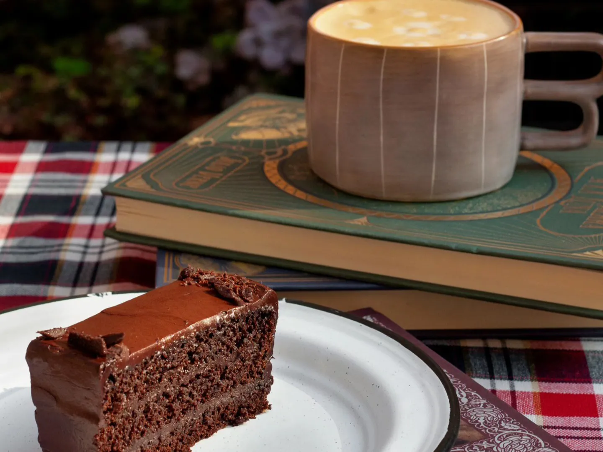

¿Dónde desayunar en Cuernavaca? En Café La Fauna
Se llama café, pero en realidad es un restaurante. En él se puede desayunar a gusto desde las 8 de la mañana sin importar si eres el tipo de persona que le gusta desayunar sola o acompañada. Las opciones incluyen platillos para quienes prefieren los desayunos tradicionales como chilaquiles y huevos al gusto, así como omelettes originales muy populares entre quienes visitan La Fauna por sus desayunos. Todos los platillos de La Fauna se preparan al momento, eso significa que hay que tener en cuenta el tiempo de preparación, a cambio sabes que los ingredientes son frescos.
Ver Menu